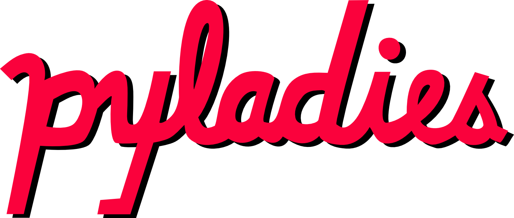
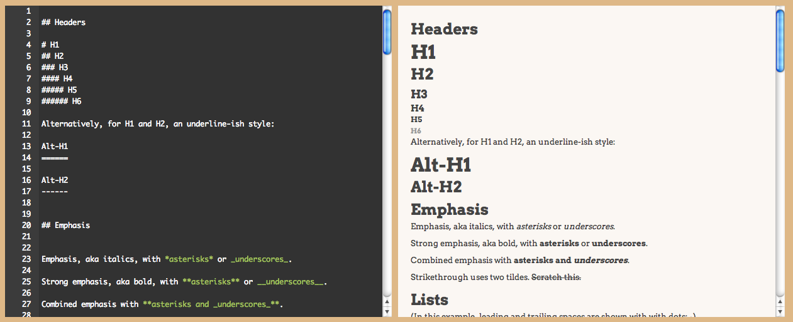
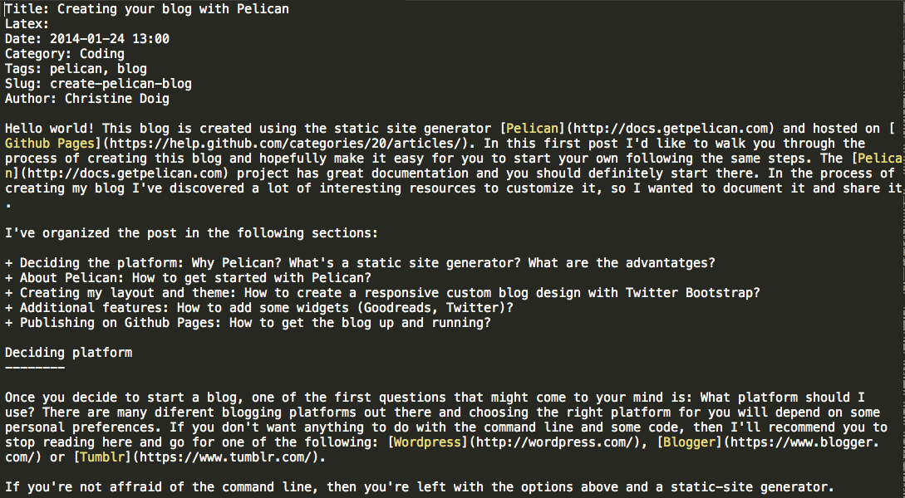
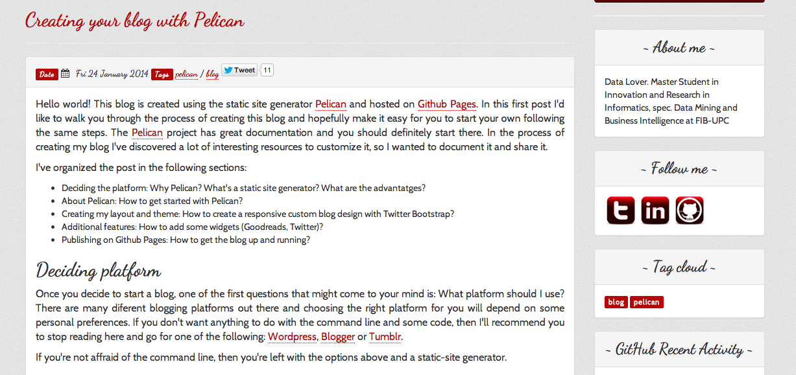
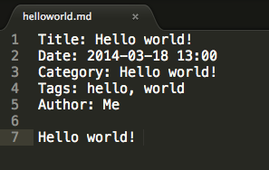

By Christine Doig @ch_doig
System for annotating a document in a way that is syntactically distinguishable from the text
For example:
Lightweight markup language: simple syntax, designed to be easy for a human to enter with a simple text editor, and easy to read in its raw form



Documentation: http://pelican.readthedocs.org
An isolated working copy of Python which allows you to work on a specific project without worry of affecting other projects.
$ pip install virtualenv
$ virtualenv ~/virtualenvs/pelican
$ cd ~/virtualenvs/pelican
$ . bin/activate
$ pip install pelican
$ pip install markdown
$ pelican-quickstart
Pelican will ask you some questions about your site and will generate the following files:
yourproject/
├── content
│ └── (pages)
├── output
├── develop_server.sh
├── fabfile.py
├── Makefile
├── pelicanconf.py
└── publishconf.py
Comments on the generated files
yourproject/
├── content
│ └── (pages)
├── output
├── develop_server.sh
├── fabfile.py
├── Makefile
├── pelicanconf.py
└── publishconf.py
Content is the folder where you save your articles in Markdown or reST files.
Output is the folder that pelican generates with your site HTML, CSS and JS.
Makefile is an automated tool to help you generate, preview and upload your site.
fabfile.py is also another automated tool to help you generate, preview and upload your site (To use Fabfile.py you have to install Fabric pip install Fabric).
pelicanconf.py is the main settings file.
publishconf.py is the publish settings file.
Write something like:
Save it in: ../pelican/yourproject/content/helloworld.md
Now type:
$ make devserver
and open your browser at http://localhost:8000
Open the configuration file: pelicanconf.py
Pelican example
{% extends "base.html" %}
{% block body %}
{% for article in articles %}
- {{ article.title }}
{% endfor %}
{% endblock %}
https://github.com/DandyDev/pelican-bootstrap3
Copy this theme in your project folder
yourproject/
├── theme
Point the theme variable of pelicanconf.py file to the folder
THEME = "pelican-bootstrap3"
#BOOTSTRAP_THEME = "simplex"
http://chdoig.github.io/create-pelican-blog.html